| Название узла | Схема узла | Ссылки на скачивание |
|---|---|---|
| Монтаж мансардных окон FAKRO на черепице Метротайл | 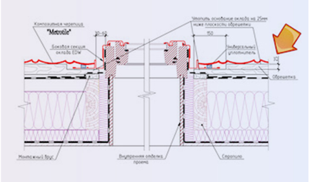 | Скачать узел в формате jpg Скачать узел в формате dwg |
| Монтаж на черепице Метротайл снегозадержателя | 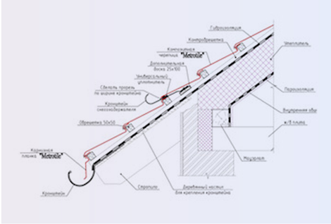 | Скачать узел в формате jpg Скачать узел в формате dwg |
| Монтаж на черепице Метротайл мансардных окон VELUX | 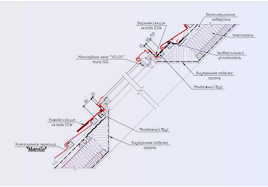 | Скачать узел в формате jpg Скачать узел в формате dwg |
| Монтаж на черепице Метротайл универсальной вентиляционной проходки Vilpe | 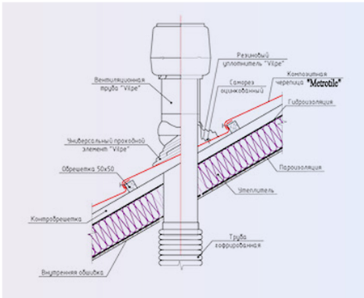 | Скачать узел в формате jpg Скачать узел в формате dwg |
| Монтаж примыкания кровли Метротайл в плоскости перпендикулярной стропилам | 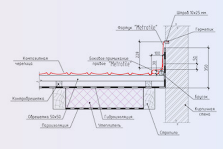 | Скачать узел в формате jpg Скачать узел в формате dwg |
| Монтаж торцевой планки черепицы Метротайл | 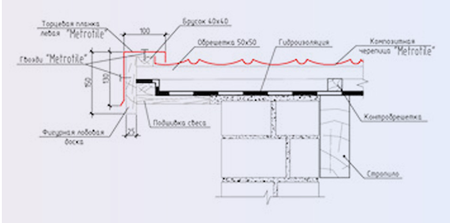 | Скачать узел в формате jpg Скачать узел в формате dwg |
| Монтаж черепицы Метротайл в ендове (угол меньше 20 градусов) | 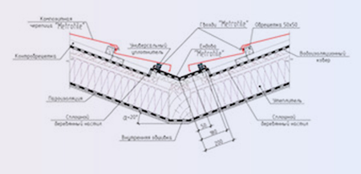 | Скачать узел в формате jpg Скачать узел в формате dwg |
| Монтаж черепицы Метротайл на скате (угол ската больше 20 градусов) | 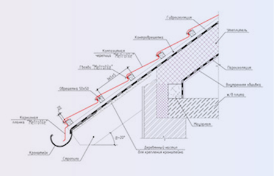 | Скачать узел в формате jpg Скачать узел в формате dwg |
| Монтаж черепицы Метротайл в ендове (угол больше 20 градусов) | 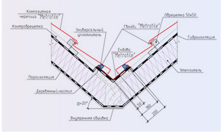 | Скачать узел в формате jpg Скачать узел в формате dwg |
| Монтаж черепицы Метротайл на внешнем переломе ската | 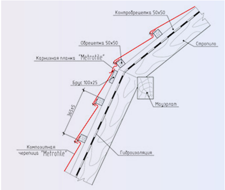 | Скачать узел в формате jpg Скачать узел в формате dwg |
| Монтаж черепицы Метротайл на внутреннем переломе ската | 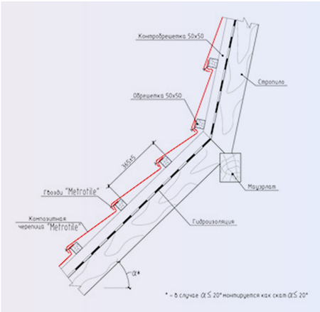 | Скачать узел в формате jpg Скачать узел в формате dwg |
| Монтаж черепицы Метротайл на скате (угол ската меньше 20 градусов) | 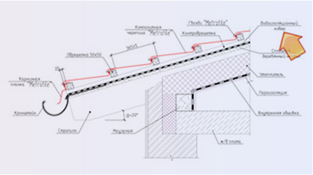 | Скачать узел в формате jpg Скачать узел в формате dwg |
| Монтаж конька на черепице Метротайл | 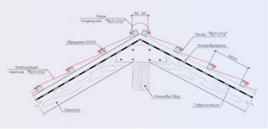 | Скачать узел в формате jpg Скачать узел в формате dwg |
| Монтаж черепицы Метротайл примыкания кровли в плоскости параллельной стропилам | 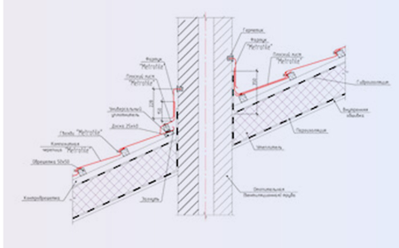 | Скачать узел в формате jpg Скачать узел в формате dwg |
Вы разрабатываете архитектурный проект?
Предлагаем Вам включить в проект композитную металлочерепицу Metrotile.